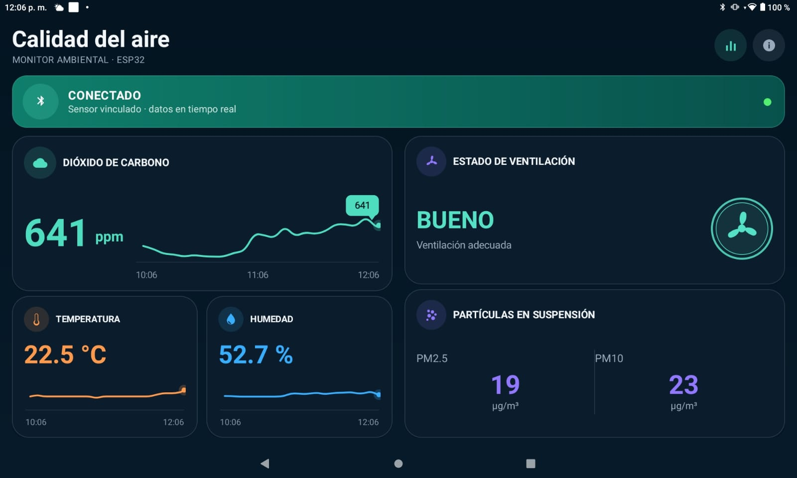
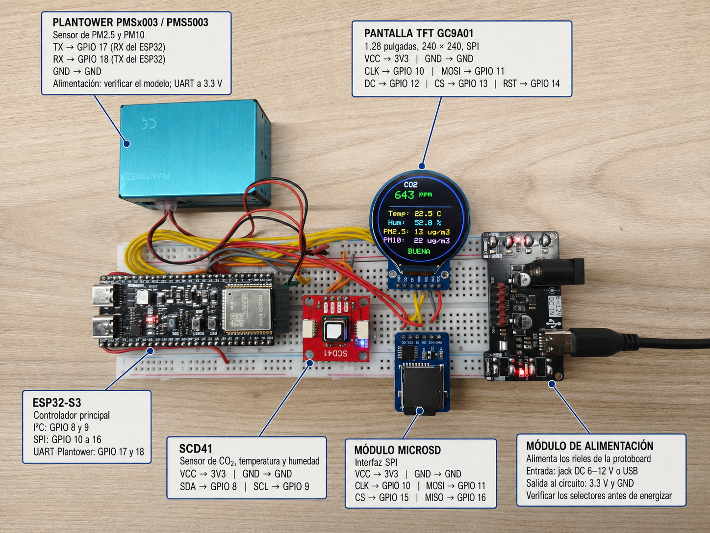
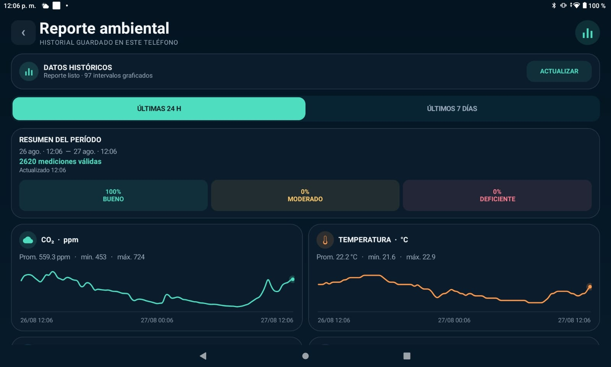
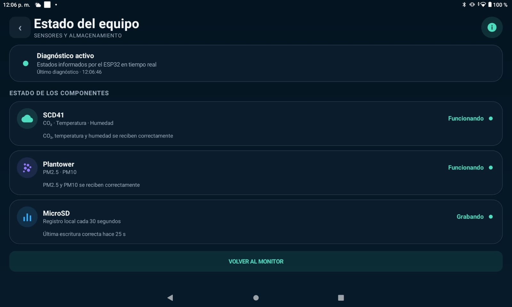

- ESP32-S3
- SCD41
- PM2.5
- BLE
- Android
Monitor de calidad del aire con ESP32-S3
Un ESP32-S3 mide CO₂, temperatura, humedad y partículas, muestra las lecturas en una pantalla y las envía por BLE a una app Android con historial y reportes.

Tecnologías
- ESP32-S3
- SCD41
- PM2.5
- BLE
- Android
Objetivo del proyecto
Medir variables de calidad del aire interior, mostrar su evolución y conservar registros tanto en el equipo como en un teléfono Android.
Arquitectura o funcionamiento
El sensor SCD41 entrega CO₂, temperatura y humedad por I²C; un Plantower PMSx003/PMS5003 comunica PM2.5 y PM10 por UART. El ESP32-S3 muestra las lecturas en una TFT GC9A01, guarda resúmenes CSV en microSD y notifica las mediciones a la app mediante Bluetooth Low Energy. La app mantiene un historial independiente en SQLite.
Flujo de funcionamiento
El firmware actualiza la pantalla y BLE aproximadamente cada cinco segundos y escribe un resumen en microSD cada 30 segundos. Al conectarse, la app envía la hora del teléfono al ESP32-S3 y registra muestras locales cada 30 segundos mientras permanece abierta y conectada. Los reportes de 24 horas, 7 días y 30 días se consultan desde SQLite incluso sin conexión al equipo; la microSD continúa como respaldo cuando la app está desconectada.
Desarrollo e implementación
El firmware Arduino en C++ integra sensores I²C y UART, pantalla SPI, registro CSV y un servicio BLE para mediciones, sincronización horaria y diagnóstico. La app Android 1.2 reúne el monitor en vivo, gráficos históricos, reportes, exportación CSV y el estado de sensores y almacenamiento. El repositorio publica el firmware y una APK instalable; no incluye el código fuente de Android.
Desafíos técnicos
El SCD41 se consulta sin bloquear el ciclo principal y reinicia la medición ante esperas o errores I²C. El firmware valida las tramas de partículas y confirma las escrituras antes de informar que la microSD está grabando. La app mantiene BLE al girar la pantalla y distingue su historial SQLite del respaldo CSV, que no importa automáticamente.
Resultados
El prototipo presenta las mediciones en la TFT y en Android, clasifica la ventilación a partir del CO₂, conserva resúmenes en microSD y ofrece reportes y exportación CSV desde la app. La clasificación de ventilación es un indicador basado en CO₂, no una evaluación completa de todos los contaminantes del aire.
Hardware utilizado
- ESP32-S3
- Sensor Sensirion SCD41 por I²C
- Sensor de partículas Plantower PMSx003/PMS5003 por UART
- Pantalla TFT GC9A01 de 1,28 pulgadas
- Módulo microSD y tarjeta FAT32
- Teléfono o tablet con Android 6.0 o superior y BLE
Software y tecnologías
- Firmware Arduino en C++
- Bibliotecas Sensirion I2C SCD4x, Adafruit GFX y Adafruit GC9A01A
- App Android 1.2 distribuida como APK
- Historial SQLite y exportación CSV
Imágenes del proyecto


